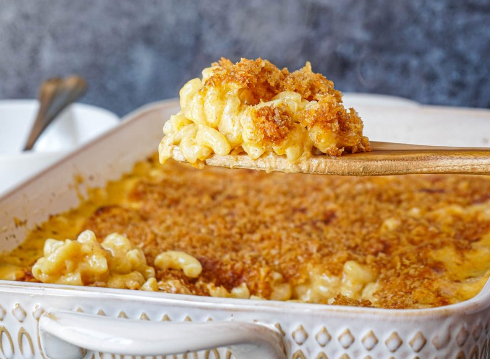

Macaroni and Cheese
Home

Description
Baked Macaroni and Cheese is the ultimate creamy comfort food, with tender pasta coated in a rich, velvety cheddar sauce and finished with a crispy, golden breadcrumb topping.
Ingredients
For the pasta:
- 1 lb (450g) elbow macaroni
For the cheese sauce:
- 4 tbsp unsalted butter
- 4 tbsp all-purpose flour
- 4 cups (960ml) whole milk, warmed
- 4 cups (400g) shredded sharp cheddar cheese
- 2 cups (200g) shredded Gruyère or mild cheddar cheese
- 1 tsp salt
- ½ tsp black pepper
- ½ tsp dry mustard powder (optional, for tang)
- ¼ tsp paprika (optional)
For the topping:
- 1½ cups (150g) panko breadcrumbs
- 4 tbsp unsalted butter, melted
- ½ cup (50g) grated Parmesan cheese (optional)
Steps
- Preheat oven to 375°F (190°C). Grease a 9x13-inch baking dish.
- Cook macaroni in a large pot of salted boiling water according to package directions until just al dente (about 1 minute less than instructed). Drain and set aside.
- Make the cheese sauce: In a large pot over medium heat, melt 4 tbsp butter. Whisk in flour and cook for 1-2 minutes to form a roux (it should bubble but not brown).
- Gradually whisk in warm milk. Cook, stirring constantly, until thickened (about 5-7 minutes). Remove from heat.
- Stir in salt, pepper, mustard powder, and paprika (if using). Add shredded cheeses in handfuls, stirring until fully melted and smooth.
- Add cooked macaroni to the cheese sauce, stirring gently to coat evenly. Pour into the prepared baking dish.
- Prepare topping: Mix panko with melted butter and Parmesan (if using). Sprinkle evenly over the macaroni.
- Bake uncovered for 25-30 minutes until bubbly and the top is golden brown.
- Let rest for 10 minutes before serving. Enjoy!